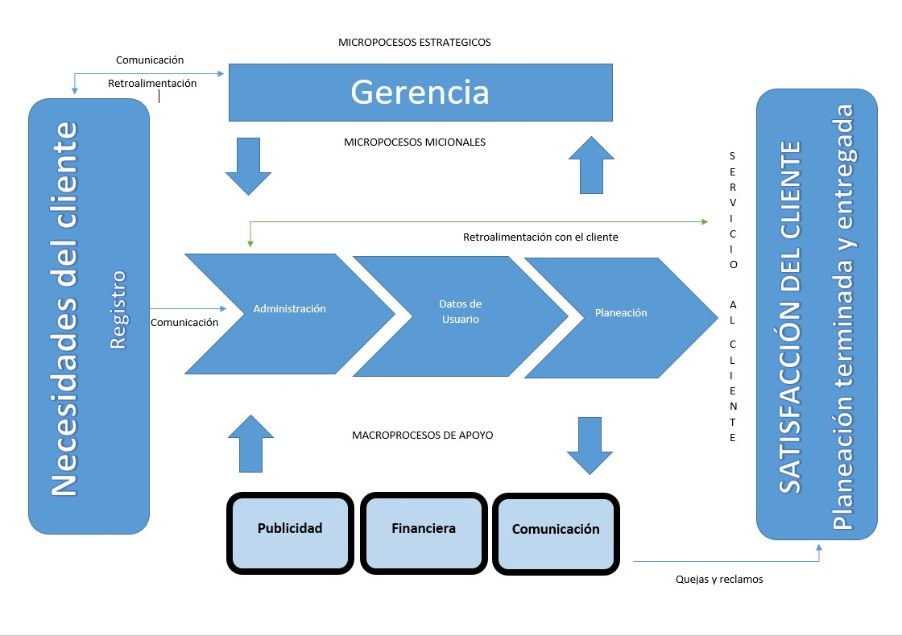

Manual Técnico
Este manual va dirigido al área de soporte técnico de la organización o a quien haga sus veces, ya que en él se detallan aspectos sobre la estructura del Sistema que le permitirá entender su funcionamiento global y posibilitar el mantenimiento del mismo.
Componentes
Algunos de los componentes de este documento son:
Alcance
Objetivo general
Implementación de un aplicativo web para el manejo de la información en la empresa Planeadores
Objetivo especifico
- Especificar los requerimientos (entrevista, cuestionarios).
- Análisis de requerimientos del proyecto (Planeación, cronograma, presupuesto, equipo de trabajo, roles).
- Diseño del aplicativo de acuerdo a los requerimientos del cliente (prototipos, versiones, uml, balsamic).
- Desarrollo del aplicativo (Base de datos, diagramas, codificación, html, javascrip, ruby, creación de módulos del sistema).
- Implementación (Pruebas del aplicativo, revisión, cambios, correcciones, manuales del sistema, capacitación al usuario final).
Descripción de los procesos
mapa de procesos
Requerimientos funcionales:
- Sistema de login
- Registrar clientes
- Actualizar Información de clientes
- Buscar clientes
- Eliminar clientes
- Agregar usuario
- Actualizar usuario
- Buscar usuario
- Eliminar usuario
- Registrar nueva planeación
- Actualizar nueva planeación
- Buscar planeación
- Eliminar planeación
- Ver planeaciones listas
- Ver planeaciones en progreso
- Ver planeaciones pendientes
- Eliminar planeación
- Registrar nueva venta
- Actualizar registro de venta
- Buscar registro de venta
- Eliminar registro de venta
- Ver registro de ventas
Diagramas UML
- Diagrama de secuencia login
- Caso de uso login


- Diagrama de secuencia registro de agente
- Caso de uso registro de agente


- Diagrama de secuencia planeación
- Caso de uso planeación


- Diagrama de secuencia transacción
- Caso de uso transacción
- Diagrama de secuencia editar
- Caso de uso editar


- Diagrama de secuencia eliminar
- Caso de uso eliminar


Administración de usuarios
Modelo relacional de la base de datos

Descripción de la plataforma
Planeadores es una Web que fue creada con la base de Ruby, CSS, Bootstrap, Javascript y Jquery. Para tener un buen rendimiento de la plataforma se requiere de lo siguiente:
- Sistema operativo Windows 7 o posteriores, Linux Kernel 3.4 en adelante o Mac OS v10 o posterior.
- Computador con mínimo de 4 GB en RAM.
- Espacio libre en disco de 500 MB.
- Impresora láser (para impresión de listados).
- Navegador Chrome versión 30 en adelante, Firefox versión 20 en adelante.
- Lector de archivos PDF como Acrobat Reader o similar.